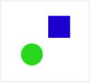
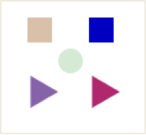
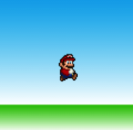
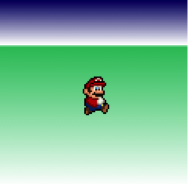
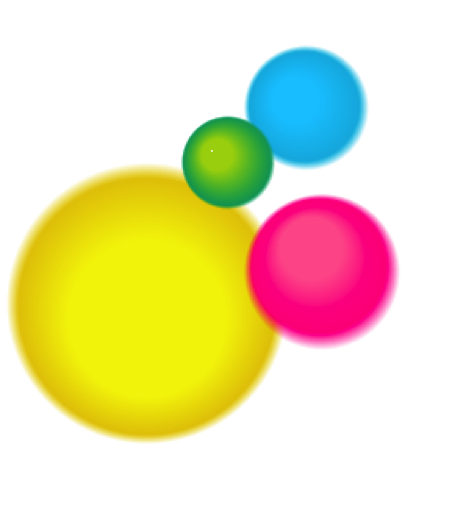

Colours: 2D Fills
Create custom colours and gradients for your shapes and animations!
2D Fills
The links to the code are:
Example 1
Example 2
Example 3
Objectives of this tutorial:
1. Learn how to create colours using hsl
2. Learn how to create colours using rgb
3. Learn how to make a linear gradient
4. Learn how to make radial gradient
Colors
1. Open a fresh Elm window by clicking this link here!

2. Copy these following lines of code into the Elm window and hit ‘Compile’:
import Color exposing (..)
import Graphics.Collage exposing (..)
import Graphics.Element exposing (..)
green = hsl (degrees 120) 0.7 0.5
blue = hsl (degrees 240) 0.7 0.5
main = collage 300 300
[move (0,0) (filled green (circle 10))
,move (25,25) (filled blue (rect 20 20))
]
This piece of code creates two shapes with different colours, by using the hsl function.
hsl stands for hue, saturation, and lightness. For example, you can create new colors
the following way:
orange = hsl ( degrees 30) 0.7 0.5
purple = hsl ( degrees 270 ) 0.7 0.5
By changing the degrees number, you can change the colour. For example, (degrees 0)
is red, (degrees 120) is green, and (degrees 240) is blue.
Try: Play around with the degrees and find new colours.
Saturation - currently, all the colours have a second number of 0.7, after the degrees.
You can change this to any number between 0.0 to 1.0 . If you change this number to
anything close to 1.0, the colour will appear very bright. Otherwise, if you change it to a
number closer to 0.0, the colour will look very dark.
Try: Play around with saturation of each shape
The last number – 0.5 – controls lightness. Making this number more than 0.5, adds a
shade of white to your colour. Anything less than 0.5, will add a shade of black.
Try: Play around with lightness of each shape
Exercises:
1. Write code for more colours under the existing green and blue code.
2. Create more shapes under “collage” in the “main” function using these new colours.
3. Use move and rotate to spread these shapes across the screen.

Challenge:
1. Using the knowledge you just learned about how to create new colours, modify the
colours you made in your previous drawings and animations.
Gradient (Linear)

For this part, you will use code from Example 2.
Exercises
1. On line 9, after the word “rgb”, there are three numbers “0 171 235”. These numbers
create the colour of the sky behind Mario.
2. Change these numbers to change the colour of the sky. Each number has to be
between 0 and 255
3. On line 11, there are another set of rgb numbers. These numbers create the colour of
the ground.
4. Change these numbers to change the colour of the ground.
Challenge:
1. The first number inside each set of brackets as shown below, for example, 0, 0.79,
0.8, 1 in,
[ (0, rgb 0 171 235)
, (0.79, white)
, (0.8, rgb 38 192 0)
, (1, white)
]
all these numbers mark where new gradients start (using percentages). For instance, in
this example, the first gradient goes from 0 to 0.79, which means it starts at 0% and
goes all the way down to 79% of the collage. Now, the next gradient starts immediately
after this percentage. And so here, the next percentage goes from 0.8 to 1, or 80% to
100%.
2. On line 10, replace 0.79 to 0.24, and change 0.8 on line 11 to 0.25.
3. Do you see the difference? Play around with these values some more.
4. Feel free to also change the rgb values.

Radial Gradient

Use Example 3 for this section.
Unlike linear gradient which flowed from top to bottom, radial gradient works in a circle.
The colour starts at the centre and expands outwards in steps. The code to create radial
gradient follows the following format:
grad : Gradient
grad =
radial (inner circle center x, y) 50 (outer circle center x, y) 90
[ ( 0, rgb 244 242 1)
, (step, rgb 228 199 0)
, ( 1, rgba 228 199 0 0)
]
50 is the radius of the inner circle, and 90 is the radius of the outer circle. The radius of
the outer circle must always be bigger.
Exercises:
1. On line 8, Change 90 to 100. What difference does it make?
2. On line 10, change 0.8 to any value between 0 and 1.
3. Change the order of the shapes inside the main function. (lines 42-45)